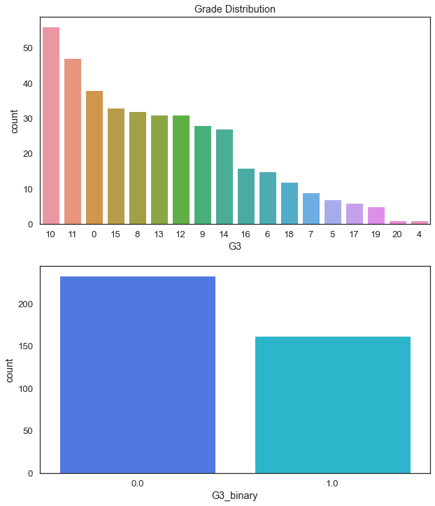
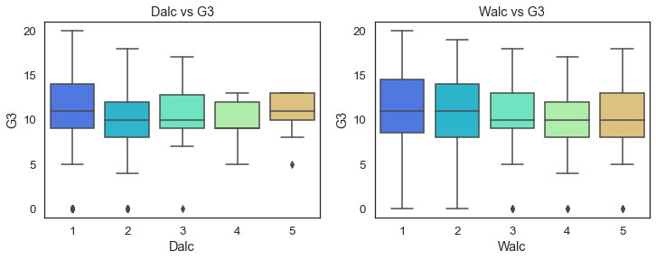
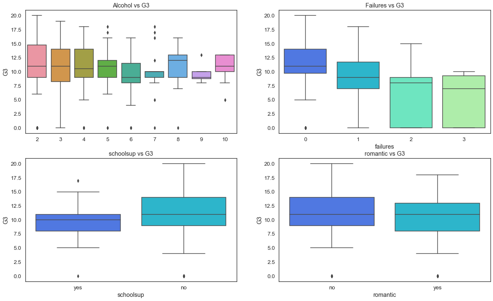
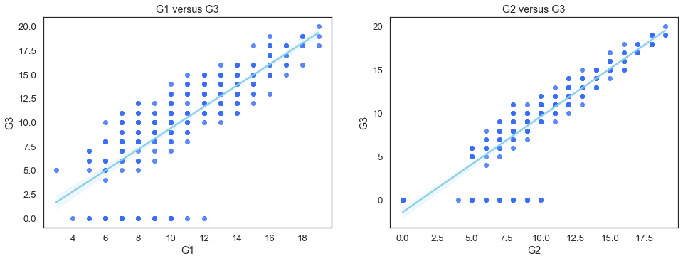
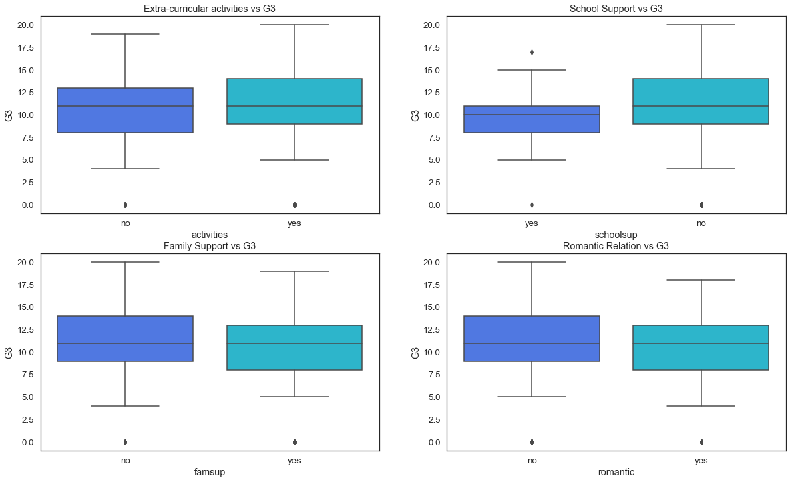

%matplotlib inline
import matplotlib.pyplot as plt
import numpy as np
import pandas as pd
import seaborn as sns
import statsmodels.formula.api as smf
sns.set_theme(style='white', palette='rainbow', font_scale=1.2)data = pd.read_csv("data/student-mat.csv")
data.head()| school | sex | age | address | famsize | Pstatus | Medu | Fedu | Mjob | Fjob | ... | famrel | freetime | goout | Dalc | Walc | health | absences | G1 | G2 | G3 | |
|---|---|---|---|---|---|---|---|---|---|---|---|---|---|---|---|---|---|---|---|---|---|
| 0 | GP | F | 18 | U | GT3 | A | 4 | 4 | at_home | teacher | ... | 4 | 3 | 4 | 1 | 1 | 3 | 6 | 5 | 6 | 6 |
| 1 | GP | F | 17 | U | GT3 | T | 1 | 1 | at_home | other | ... | 5 | 3 | 3 | 1 | 1 | 3 | 4 | 5 | 5 | 6 |
| 2 | GP | F | 15 | U | LE3 | T | 1 | 1 | at_home | other | ... | 4 | 3 | 2 | 2 | 3 | 3 | 10 | 7 | 8 | 10 |
| 3 | GP | F | 15 | U | GT3 | T | 4 | 2 | health | services | ... | 3 | 2 | 2 | 1 | 1 | 5 | 2 | 15 | 14 | 15 |
| 4 | GP | F | 16 | U | GT3 | T | 3 | 3 | other | other | ... | 4 | 3 | 2 | 1 | 2 | 5 | 4 | 6 | 10 | 10 |
5 rows × 33 columns
data.shape(395, 33)Visualize Resp
fig = plt.figure(figsize=(20, 16))
data.loc[data.G3 < 12, 'G3_binary'] = 0
data.loc[data.G3 >= 12, 'G3_binary'] = 1
data.head()| school | sex | age | address | famsize | Pstatus | Medu | Fedu | Mjob | Fjob | ... | freetime | goout | Dalc | Walc | health | absences | G1 | G2 | G3 | G3_binary | |
|---|---|---|---|---|---|---|---|---|---|---|---|---|---|---|---|---|---|---|---|---|---|
| 0 | GP | F | 18 | U | GT3 | A | 4 | 4 | at_home | teacher | ... | 3 | 4 | 1 | 1 | 3 | 6 | 5 | 6 | 6 | 0.0 |
| 1 | GP | F | 17 | U | GT3 | T | 1 | 1 | at_home | other | ... | 3 | 3 | 1 | 1 | 3 | 4 | 5 | 5 | 6 | 0.0 |
| 2 | GP | F | 15 | U | LE3 | T | 1 | 1 | at_home | other | ... | 3 | 2 | 2 | 3 | 3 | 10 | 7 | 8 | 10 | 0.0 |
| 3 | GP | F | 15 | U | GT3 | T | 4 | 2 | health | services | ... | 2 | 2 | 1 | 1 | 5 | 2 | 15 | 14 | 15 | 1.0 |
| 4 | GP | F | 16 | U | GT3 | T | 3 | 3 | other | other | ... | 3 | 2 | 1 | 2 | 5 | 4 | 6 | 10 | 10 | 0.0 |
5 rows × 34 columns
<Figure size 1440x1152 with 0 Axes>fig = plt.figure(figsize=(10, 12))
fig.add_subplot(2, 1, 1)
sns.countplot(x='G3', data=data, order=data['G3'].value_counts().index).set_title("Grade Distribution")
fig.add_subplot(2, 1, 2)
sns.countplot(x=data.G3_binary, order=data.G3_binary.value_counts().index)<AxesSubplot: xlabel='G3_binary', ylabel='count'>
# plt.figure(figsize=(25, 16))
# sns.heatmap(data.corr(numeric_only=True), annot=True, cmap='Blues')Behavioral
fig = plt.figure(figsize=(12, 4))
fig.add_subplot(1, 2, 1)
sns.boxplot(x='Dalc', y='G3', data=data).set_title('Dalc vs G3')
fig.add_subplot(1, 2, 2)
sns.boxplot(x='Walc', y='G3', data=data).set_title('Walc vs G3')Text(0.5, 1.0, 'Walc vs G3')
fig = plt.figure(figsize=(20, 12))
fig.add_subplot(2, 2, 1)
alc = data['Dalc'] + data['Walc']
sns.boxplot(x=alc, y='G3', data=data).set_title('Alcohol vs G3')
fig.add_subplot(2, 2, 2)
sns.boxplot(x='failures', y='G3', data=data).set_title('Failures vs G3')
fig.add_subplot(2, 2, 3)
sns.boxplot(x='schoolsup', y='G3', data=data).set_title('schoolsup vs G3')
fig.add_subplot(2, 2, 4)
sns.boxplot(x='romantic', y='G3', data=data).set_title('romantic vs G3')Text(0.5, 1.0, 'romantic vs G3')
fig = plt.figure(figsize=(16, 12))
fig.add_subplot(2, 2, 1)
sns.regplot(x='G1', y='G3', data=data, line_kws={'color': 'skyblue'}).set_title('G1 versus G3')
fig.add_subplot(2, 2, 2)
sns.regplot(x='G2', y='G3', data=data, line_kws={'color': 'skyblue'}).set_title('G2 versus G3')Text(0.5, 1.0, 'G2 versus G3')
Pre-Processsing
# read data
data = pd.read_csv("data/student-mat.csv")
# binary_mapping
data['school'] = data['school'].map({'GP':0, 'MS':1})
data['sex'] = data['sex'].map({'F':0, 'M':1})
data['famsize'] = data['famsize'].map({'GT3':0, 'LE3':1})
data['address'] = data['address'].map({'R':0, 'U':1})
data['Pstatus'] = data['Pstatus'].map({'A':0, 'T':1})
binary_mapping = {'yes':1, 'no':0}
data['schoolsup'] = data['schoolsup'].map(binary_mapping)
data['famsup'] = data['famsup'].map(binary_mapping)
data['paid'] = data['paid'].map(binary_mapping)
data['activities'] = data['activities'].map(binary_mapping)
data['nursery'] = data['nursery'].map(binary_mapping)
data['higher'] = data['higher'].map(binary_mapping)
data['internet'] = data['internet'].map(binary_mapping)
data['romantic'] = data['romantic'].map(binary_mapping)
# level-encoding
job_encoding = {'other':0, 'at_home': 1, 'services':2, 'health': 3, 'teacher': 4}
data['Mjob'] = data['Mjob'].map(job_encoding)
data['Fjob'] = data['Fjob'].map(job_encoding)
data['reason'] = data['reason'].map({'other': 0, 'home': 1, 'reputation': 2, 'course': 3})
data['guardian'] = data['guardian'].map({'other': 0, 'mother': 1, 'father': 2})
# combine Dalc and Walc into alc
data.loc[:,'alc']= data['Dalc'] + data['Walc']
# drop Dalc and Walc
data = data.drop(columns=['Dalc', 'Walc'])
# drop G1 and G2
data = data.drop(columns=['G1', 'G2'])
data.head(3)
# data.dtypes| school | sex | age | address | famsize | Pstatus | Medu | Fedu | Mjob | Fjob | ... | higher | internet | romantic | famrel | freetime | goout | health | absences | G3 | alc | |
|---|---|---|---|---|---|---|---|---|---|---|---|---|---|---|---|---|---|---|---|---|---|
| 0 | 0 | 0 | 18 | 1 | 0 | 0 | 4 | 4 | 1 | 4 | ... | 1 | 0 | 0 | 4 | 3 | 4 | 3 | 6 | 6 | 2 |
| 1 | 0 | 0 | 17 | 1 | 0 | 1 | 1 | 1 | 1 | 0 | ... | 1 | 1 | 0 | 5 | 3 | 3 | 3 | 4 | 6 | 2 |
| 2 | 0 | 0 | 15 | 1 | 1 | 1 | 1 | 1 | 1 | 0 | ... | 1 | 1 | 0 | 4 | 3 | 2 | 3 | 10 | 10 | 5 |
3 rows × 30 columns
# data.isna().sum()X = data
y = data.G3from sklearn.feature_selection import SelectKBest, chi2
k_best = SelectKBest(score_func=chi2, k=10)
k_best.fit(X, y)
df_score = pd.Series(data=k_best.scores_, index=X.columns)
df_score.sort_values(ascending=False)[1:6]absences 648.166848
failures 140.934898
alc 41.036997
Fjob 32.603524
schoolsup 28.319018
dtype: float64features_selected = df_score.nlargest(3).index
features_selectedIndex(['G3', 'absences', 'failures'], dtype='object')# train = split
from sklearn.model_selection import train_test_split, KFold, cross_val_score
k_fold = KFold(n_splits=10, random_state=1, shuffle=True)
train, test, y_train, y_test = train_test_split(X, y, test_size=0.2, random_state=1)
train.head()| school | sex | age | address | famsize | Pstatus | Medu | Fedu | Mjob | Fjob | ... | higher | internet | romantic | famrel | freetime | goout | health | absences | G3 | alc | |
|---|---|---|---|---|---|---|---|---|---|---|---|---|---|---|---|---|---|---|---|---|---|
| 23 | 0 | 1 | 16 | 1 | 1 | 1 | 2 | 2 | 0 | 0 | ... | 1 | 1 | 0 | 5 | 4 | 4 | 5 | 0 | 12 | 6 |
| 296 | 0 | 0 | 19 | 1 | 0 | 1 | 4 | 4 | 3 | 0 | ... | 1 | 1 | 0 | 2 | 3 | 4 | 2 | 0 | 0 | 5 |
| 13 | 0 | 1 | 15 | 1 | 0 | 1 | 4 | 3 | 4 | 0 | ... | 1 | 1 | 0 | 5 | 4 | 3 | 3 | 2 | 11 | 3 |
| 249 | 0 | 1 | 16 | 1 | 0 | 1 | 0 | 2 | 0 | 0 | ... | 1 | 1 | 0 | 4 | 3 | 2 | 5 | 0 | 15 | 6 |
| 61 | 0 | 0 | 16 | 1 | 0 | 1 | 1 | 1 | 2 | 2 | ... | 1 | 1 | 1 | 5 | 5 | 5 | 5 | 6 | 11 | 10 |
5 rows × 30 columns
# from sklearn.linear_model import LinearRegression
# from sklearn.linear_model import Lasso
# from sklearn.linear_model import Ridge
# classifiers = {
# 'Linear Regression' : LinearRegression(),
# 'Lasso': Lasso(),
# 'Ridge': Ridge(),
# }
# for key, clf in classifiers.items():
# print(key, clf)
# score = cross_val_score(clf, X_train, y_train, cv=k_fold, scoring='neg_mean_squared_error')
# rmse = np.sqrt(-score)
# rmse_score = np.mean(rmse)
# print('RMSE score with CV of {0} is {1}'.format(key, rmse_score))# lm_fit = LinearRegression().fit(X_train, y_train)
# lm_fit.coef_# pred_score = lasso_fit.predict(X[selected])
# df_res = pd.DataFrame([pred_score,y], index=["pred","true"]).T
# df_res.loc[pred_score < 12] = 0
# df_res.loc[pred_score >= 12] = 1
# y[y < 12] = 0
# y[y >= 12] = 1
# # df_res
# np.mean(df_res.pred == df_res.true)Linear Regression Model
train = pd.DataFrame(train)
# train.head()G3 ~ absences * failures + schoolsup + romantic
df_score.sort_values(ascending=False)[1:8]absences 648.166848
failures 140.934898
alc 41.036997
Fjob 32.603524
schoolsup 28.319018
Mjob 28.144005
romantic 20.089526
dtype: float64import statsmodels.formula.api as smf
# function to test prediction accuracy
def acc(lm, _Xtest, _ytest):
pred_test = lm.predict(_Xtest)
data = pd.concat([pred_test, _ytest], axis = 1)
test_res = pd.DataFrame(data, columns=["predicted", "actual"], dtype="float64")
test_res[pred_test < 12],test_res[pred_test >= 12] = 0,1
test_res[pred_test < 6],test_res[pred_test >= 12] = 0,1
y_test[y_test < 12],y_test[y_test >= 12] = 0,1
return np.mean(test_res.predicted == test_res.actual)
# function to format and print result
def display_res(lm_formula):
lm = smf.ols(formula = lm_formula, data=train).fit()
r2 = lm.rsquared
acc_test = acc(lm, test, y_test)
acc_full = acc(lm, X, y)
print(f"{lm_formula}\nR-Squared = {r2:.4f}\nAccuracy on test set: {acc_test}\tfull dataset: {acc_full}")lm0 = 'G3 ~ absences'
display_res(lm0)G3 ~ absences
R-Squared = 0.0016
Accuracy on test set: 1.0 full dataset: 1.0lm1 = 'G3 ~ absences + failures'
display_res(lm1)G3 ~ absences + failures
R-Squared = 0.1237
Accuracy on test set: 1.0 full dataset: 1.0lm2 = 'G3 ~ absences + failures + alc'
display_res(lm2)G3 ~ absences + failures + alc
R-Squared = 0.1238
Accuracy on test set: 1.0 full dataset: 1.0lm3 = 'G3 ~ absences + failures + alc + Fjob'
display_res(lm3)G3 ~ absences + failures + alc + Fjob
R-Squared = 0.1300
Accuracy on test set: 1.0 full dataset: 1.0lm4 = 'G3 ~ absences + failures + schoolsup + romantic'
display_res(lm4)G3 ~ absences + failures + schoolsup + romantic
R-Squared = 0.1517
Accuracy on test set: 1.0 full dataset: 1.0
Social Factors
